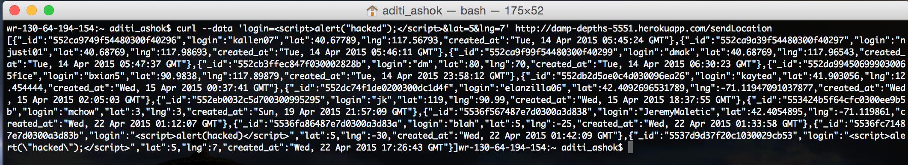
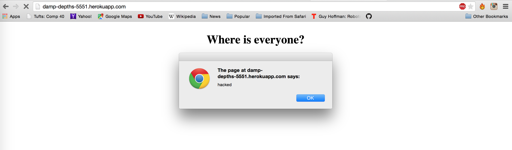

Security Assessment of the Real Marauder's Map Server
by Aditi Ashok
Introduction
This assignment tests the security of the Marauder's Map web application developed by Kalina Allen. The Marauder's Map is a product that:
- Retrieves your current location and sends your current location to a datastore.
- Retrieves and displays the locations of people in the class on the map.
The initial stage of the Marauder's Map sent the user's location to a blackbox server created by Ming Chow. Then, Kalina, at her client's request, modified the project to send location to a server she had created.
This report aims to find and assess the vulnerabilities in the server and the Marauder's Map that would make it unsafe for widespread use. I will aim to find vulnerabilities in the code itself, and not in the methods specified to create the project.
Methodology
First, "black-box" testing was carried out, meaning that attacks were made without viewing source code, using tools such as curl. Then, I reviewed the code for other vulnerabilities.
Abstract of Findings
The abstract of findings goes here
Issues Found
1. Cross-Site Scripting (XSS)
Location
Affects the GET API
Severity
High. Since the website is driven by user input, issues such as this one pose a high risk since one rogue user could cause the entire server to crash and thus cause people not to want to use the product.
Severity
High. Since the website is driven by user input, issues such as this one pose a high risk since one rogue user could cause the entire server to crash and thus cause people not to want to use the product.
Description of Issue
Since data sent via the POST API is not escaped, so if someone includes Javascript or HTML in place of a login name, it will automatically execute. Here is an example of injecting a script into the HTML code. As you can see, the request executed and the request is visible in the JSON returned.

Proof of Vulnerability
As you can see in the image below, the script has been injected into the server and the alert window saying "hacked" pops up when the page is loaded.

Resolution
To resolve the issue, input must be escaped before it enters the database. There are certain characters that are commonly interpreted as code and thus make web applications vulnerable to XSS. You can escape characters with HTML entity encoding to prevent a script, style, or event handler from executing. Some common characters to escape include:
- & -> & amp
- < -> & lt
- > -> & gt
- " -> & quot
ESAPI can be used to escape the HTML entity as follows:
String safe = ESAPI.encoder( ).encodeForHTML(request.getParameter("input"));
2. Next Issue